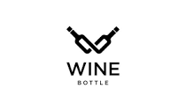
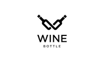

Knowing that the act of opening it is just as important as the enjoyment that
follows.They carefully select the appropriate tool, whether it be a corkscrew,
a sommelier knife, or an electric opener, depending on the occasion and their
personal preference.
Natural cork stoppers, made from the bark of cork oak trees, are a traditional and widely used closure. They create a tight seal and allow for a small amount of oxygen exchange,which can contribute to the aging process of certain wines.
Great wines often possess a depth of character and a unique expression of their terroir—the combination of soil, climate, and viticultural practices specific to a particular wine region. They reflect the nuances of the grape variety or blend, resulting in wines that can be vibrant, elegant, powerful, or ethereal, depending on their style.